<title>Malleable Paper</title>
<link rel="stylesheet" href="https://fonts.googleapis.com/css2?family=Instrument+Sans:wght@500;600;700&family=Source+Sans+3:wght@400;600&family=IBM+Plex+Mono:wght@400;500&display=swap">
<style>
  :root {
    --paper: #ffffff; --ink: #12141a; --ink-2: #3a3f4c;
    --blue-l: #e2efff; --blue-d: #2e6fe0;
    --amber-l: #fff0d1; --amber-d: #d9891a;
    --green-l: #dcf5e4; --green-d: #23a05a;
    --rose-l: #ffe1e8; --rose-d: #e34a6f;
    --violet-l: #ece5ff; --violet-d: #7b58e6;
    --teal-l: #d9f5f2; --teal-d: #1e9c8f;
    --rule: #e2efff; --shot-border: #e2efff;
    --display: "Instrument Sans", "Helvetica Neue", Arial, sans-serif;
    --body: "Source Sans 3", "Segoe UI", Helvetica, Arial, sans-serif;
    --mono: "IBM Plex Mono", ui-monospace, Menlo, Consolas, monospace;
  }
  @media (prefers-color-scheme: dark) {
    :root:not([data-theme="light"]) {
      --paper: #0f1117; --ink: #eef0f5; --ink-2: #b7bcc9;
      --blue-l: #172a4d; --blue-d: #7fa9ff; --amber-l: #3d2c0f; --amber-d: #f0b45a;
      --green-l: #12351f; --green-d: #5fd08a; --rose-l: #3f1a25; --rose-d: #ff8aa5;
      --violet-l: #241a4a; --violet-d: #b39cff; --teal-l: #0f3330; --teal-d: #5fd6c8;
      --rule: #1e2a44; --shot-border: #1e2a44;
    }
  }
  :root[data-theme="dark"] {
    --paper: #0f1117; --ink: #eef0f5; --ink-2: #b7bcc9;
    --blue-l: #172a4d; --blue-d: #7fa9ff; --amber-l: #3d2c0f; --amber-d: #f0b45a;
    --green-l: #12351f; --green-d: #5fd08a; --rose-l: #3f1a25; --rose-d: #ff8aa5;
    --violet-l: #241a4a; --violet-d: #b39cff; --teal-l: #0f3330; --teal-d: #5fd6c8;
    --rule: #1e2a44; --shot-border: #1e2a44;
  }
  * { box-sizing: border-box; }
  body { margin: 0; background: var(--paper); color: var(--ink); font-family: var(--body); font-size: 18px; line-height: 1.6; padding-inline: 20px; padding-block: 8px 80px; }
  main { max-width: 720px; margin: 0 auto; }
  h1, h2, h3 { font-family: var(--display); text-wrap: balance; margin: 0; letter-spacing: -0.01em; }
  h1 { font-size: clamp(34px, 7vw, 52px); font-weight: 700; line-height: 1.05; }
  h2 { font-size: 26px; font-weight: 600; line-height: 1.2; margin-top: 8px; }
  h3 { font-size: 19px; font-weight: 600; margin-top: 6px; }
  p { margin: 0; max-width: 62ch; }
  .eyebrow { font-family: var(--display); font-size: 12px; font-weight: 600; letter-spacing: 0.1em; text-transform: uppercase; color: var(--blue-d); }
  .eyebrow.amber { color: var(--amber-d); } .eyebrow.violet { color: var(--violet-d); } .eyebrow.teal { color: var(--teal-d); } .eyebrow.green { color: var(--green-d); } .eyebrow.rose { color: var(--rose-d); }
  header { padding-block: 40px 28px; display: grid; gap: 14px; }
  .lede { font-size: 21px; line-height: 1.5; color: var(--ink-2); max-width: 30ch; }
  .tag { display: inline-block; font-family: var(--display); font-size: 12px; font-weight: 600; letter-spacing: .08em; text-transform: uppercase; padding: 3px 9px; background: var(--blue-l); color: var(--blue-d); }
  section { display: grid; gap: 14px; padding-block: 34px; border-top: 2px solid var(--rule); }
  .stack { display: grid; gap: 10px; }
  figure { margin: 0; display: grid; gap: 8px; }
  figure img { width: 100%; height: auto; display: block; border: 2px solid var(--shot-border); }
  figcaption { font-size: 15px; color: var(--ink-2); line-height: 1.45; }
  figcaption b { color: var(--ink); font-weight: 600; }
  .two { display: grid; grid-template-columns: repeat(auto-fit, minmax(300px, 1fr)); gap: 16px; }
  ul { margin: 0; padding-left: 20px; display: grid; gap: 6px; max-width: 62ch; }
  li::marker { color: var(--blue-d); }
  .kv { display: grid; grid-template-columns: max-content 1fr; gap: 6px 16px; font-size: 16px; }
  .kv dt { font-family: var(--display); font-weight: 600; color: var(--violet-d); }
  .kv dd { margin: 0; color: var(--ink-2); }
  code, .mono { font-family: var(--mono); font-size: 0.86em; }
  code { background: var(--blue-l); color: var(--blue-d); padding: 1px 5px; }
  .loop { display: grid; grid-template-columns: repeat(4, 1fr); gap: 8px; font-family: var(--display); font-size: 13px; font-weight: 600; text-transform: uppercase; letter-spacing: .06em; text-align: center; }
  .loop div { padding: 12px 6px; }
  .loop .data { background: var(--amber-l); color: var(--amber-d); }
  .loop .inf { background: var(--blue-l); color: var(--blue-d); }
  .loop .int { background: var(--violet-l); color: var(--violet-d); }
  .loop .act { background: var(--green-l); color: var(--green-d); }
  .loop-note { display: grid; grid-template-columns: 1fr 1fr; gap: 8px; font-size: 14px; color: var(--ink-2); }
  .loop-note div { padding: 8px 10px; border-top: 2px solid var(--rule); }
  table { border-collapse: collapse; width: 100%; font-size: 15px; }
  th, td { text-align: left; padding: 8px 10px 8px 0; vertical-align: top; border-bottom: 1px solid var(--rule); }
  th { font-family: var(--display); font-size: 12px; text-transform: uppercase; letter-spacing: .08em; color: var(--blue-d); font-weight: 600; }
  .scroll { overflow-x: auto; }
  .quiet { color: var(--ink-2); }
  .marks { display: flex; flex-wrap: wrap; gap: 10px 22px; font-size: 15px; color: var(--ink-2); align-items: center; }
  .mk { display: inline-block; width: 10px; height: 10px; margin-right: 8px; vertical-align: -1px; }
  .mk-note { background: var(--blue-d); border-radius: 50%; }
  .mk-action { border: 2px solid var(--amber-d); }
  .mk-question { border: 2px solid var(--amber-d); border-radius: 50%; }
  .mk-reflection { border: 2px solid var(--violet-d); transform: rotate(45deg); width: 9px; height: 9px; }
  .mk-intention { background: var(--violet-d); transform: rotate(45deg); width: 9px; height: 9px; }
  .mk-reference { width: 0; height: 0; border-left: 5px solid transparent; border-right: 5px solid transparent; border-bottom: 10px solid var(--teal-d); }
  @media (max-width: 480px) { .loop { grid-template-columns: 1fr 1fr; } .loop-note { grid-template-columns: 1fr; } }
</style>

<main>
  <header>
    <span class="tag">Product pitch · prototype 4 · 19 Sept 2026</span>
    <h1>Malleable Paper</h1>
    <p class="lede">A paper that writes back. You write in your own words; the paper reorganises them, proposes what to do, and shows its work. Every inference is yours to accept, reject, or defer.</p>
  </header>

  <section>
    <span class="eyebrow amber">The problem</span>
    <h2>Notes make you choose a structure before you know what you think. Assistants rewrite you.</h2>
    <p>A journal, a to-do list, a plan and a spreadsheet are four apps because each one fixes its structure up front. Writing into any of them is filling a form. AI assistants remove the form and replace it with a chat: you get back a paraphrase, in someone else's voice, with the reasoning hidden.</p>
    <p>Malleable Paper keeps the form out and the voice in. The surface is blank paper. The structure arrives after you write, made only of your own phrases, and you can see exactly where each piece came from.</p>
  </section>

  <section>
    <span class="eyebrow">What it looks like</span>
    <h2>Write a messy paragraph. Pause two seconds.</h2>
    <figure>
      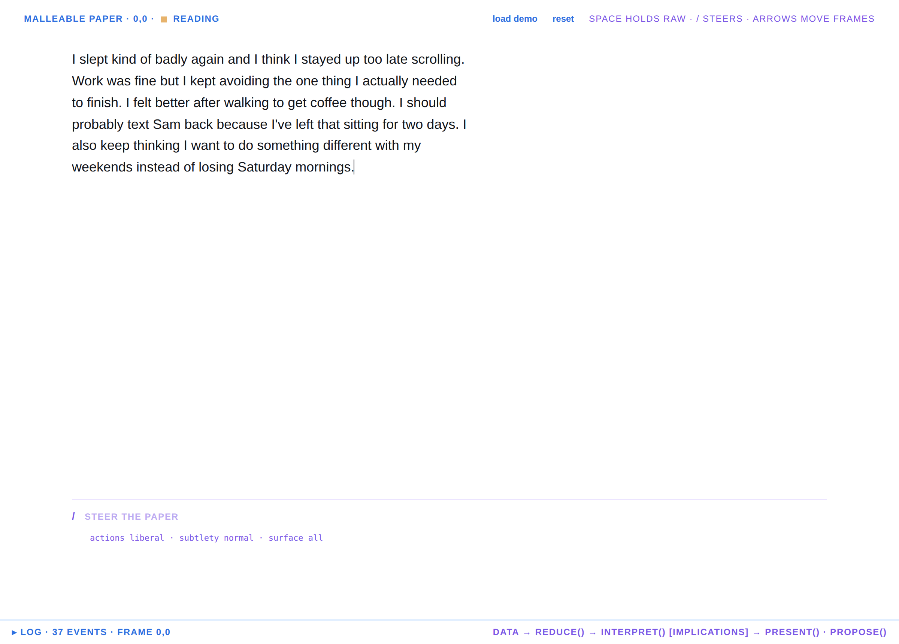
      <figcaption><b>Writing.</b> One column, no chrome. The word <i>reading</i> in the corner is the only sign the paper is listening.</figcaption>
    </figure>
    <figure>
      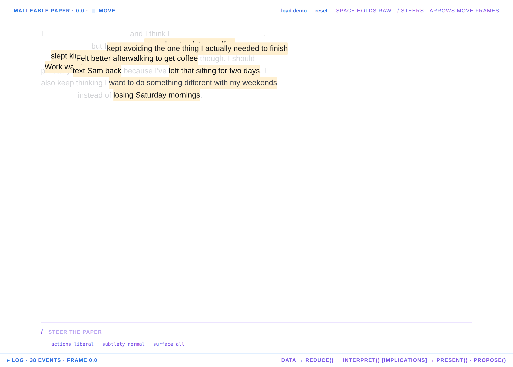
      <figcaption><b>Lift.</b> The exact spans that will move are highlighted where they sit. The connectives ("and I think", "because") are glue and begin to fade.</figcaption>
    </figure>
    <figure>
      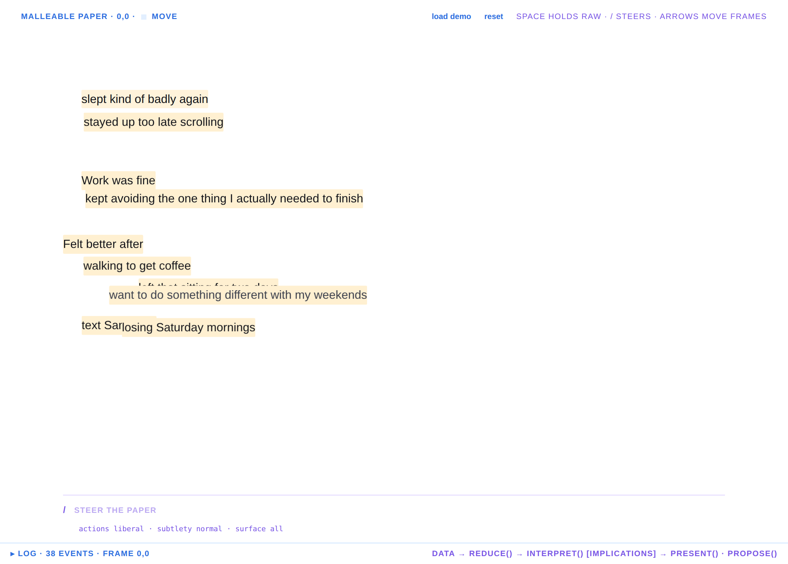
      <figcaption><b>Move.</b> The same phrases fly into clusters. No headings, no markers, no buttons yet: only your words and the whitespace opening between them. This is the whole thesis in one frame: you watch your own material become structure.</figcaption>
    </figure>
    <figure>
      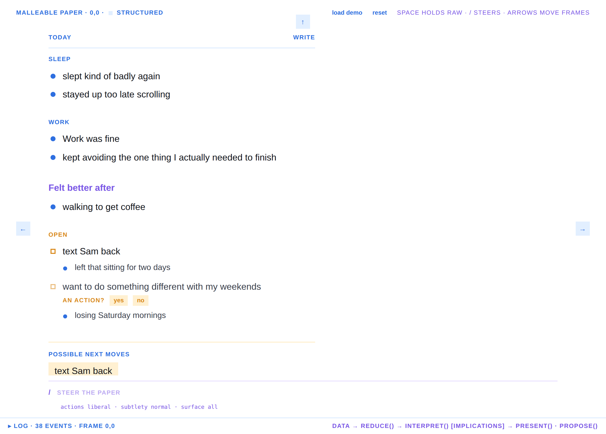
      <figcaption><b>Structured.</b> Generated headings (<i>Sleep</i>, <i>Work</i>, <i>Open</i>) fade in last, in small uppercase so they never pass as yours. <i>Felt better after</i> is your phrase, used as a heading. The soft claim "want to do something different with my weekends" is shown tentative with the question <i>an action? yes / no</i>. Two next moves are offered.</figcaption>
    </figure>
  </section>

  <section>
    <span class="eyebrow green">Tending</span>
    <h2>Every inference is a question you can answer.</h2>
    <div class="two">
      <figure>
        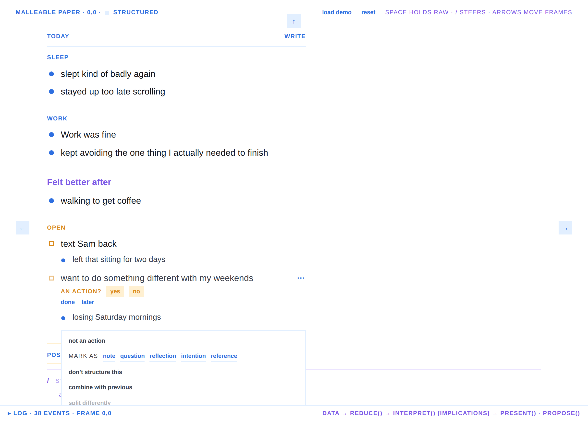
        <figcaption><b>The ⋯ menu.</b> Below the corrections it lists what the paper believes about this block: <span class="mono">type=action 0.80</span>, <span class="mono">group=open</span>, <span class="mono">intent=resolve</span>, each with its reason.</figcaption>
      </figure>
      <figure>
        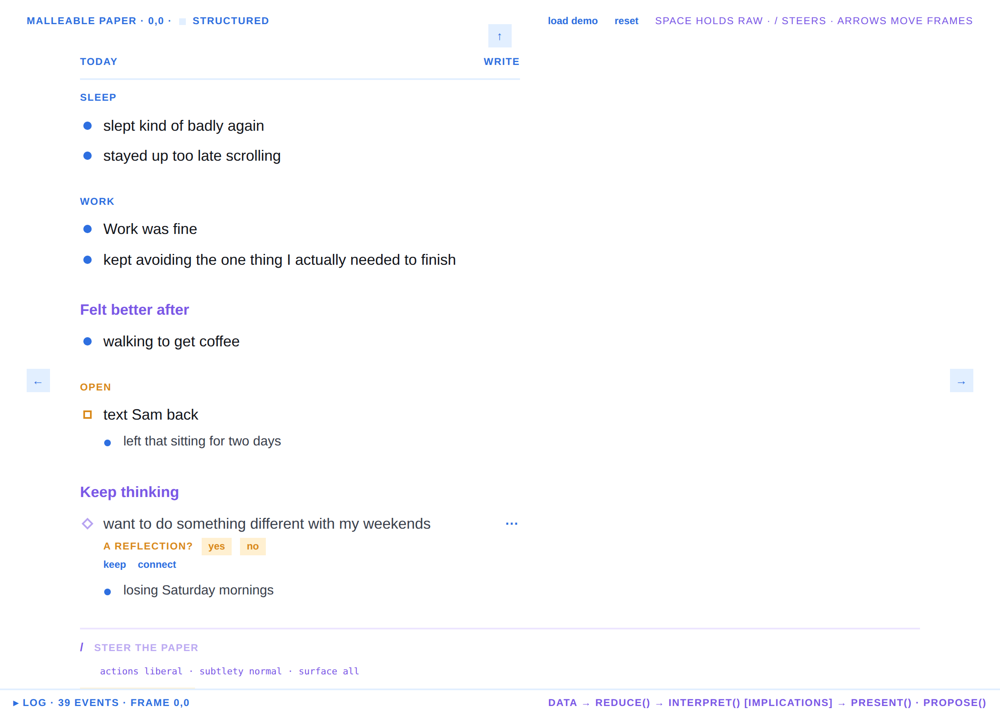
        <figcaption><b>After "no".</b> The block leaves <i>Open</i> and settles under <i>Keep thinking</i>, your words again, as a reflection. Its next move is gone. The rejection is permanent for that claim.</figcaption>
      </figure>
    </div>
  </section>

  <section>
    <span class="eyebrow violet">Steering</span>
    <h2>One command line. It tends the paper's intentions, it never chats.</h2>
    <div class="two">
      <figure>
        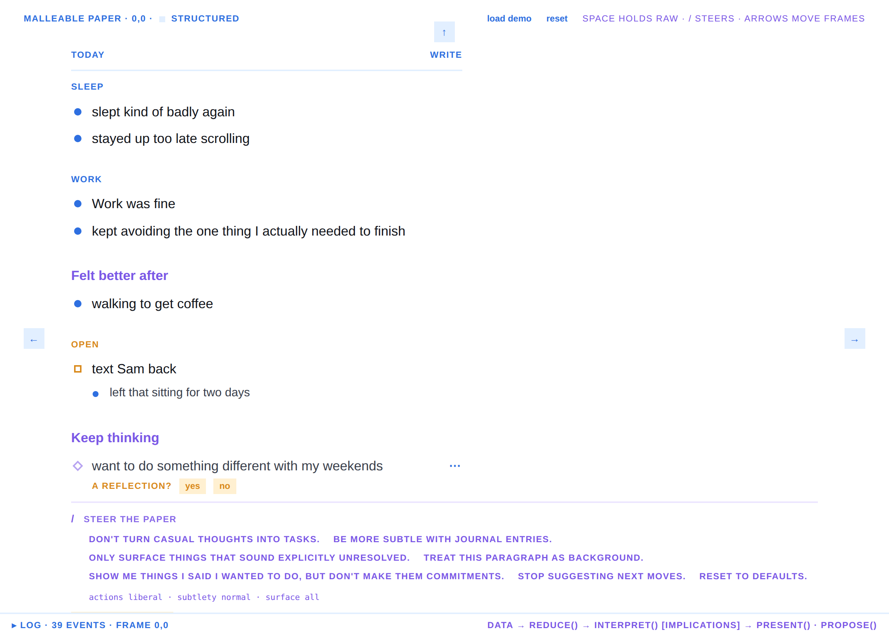
        <figcaption><b>Press /.</b> Seeds appear. Each one is a policy change, recorded as an event.</figcaption>
      </figure>
      <figure>
        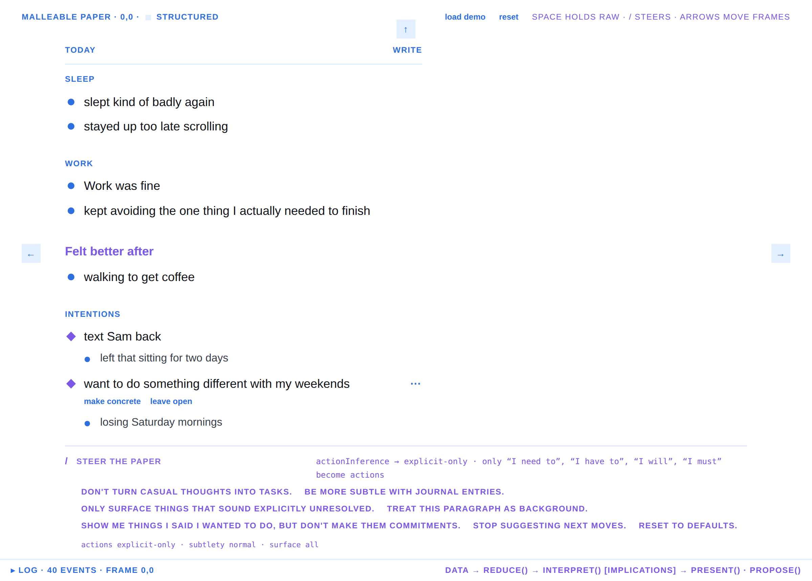
        <figcaption><b>"Don't turn casual thoughts into tasks."</b> <i>Open</i> becomes <i>Intentions</i>. No next moves. The reply is the policy patch itself.</figcaption>
      </figure>
    </div>
  </section>

  <section>
    <span class="eyebrow teal">The plane</span>
    <h2>Typographic structure and spatial placement live in one frame.</h2>
    <figure>
      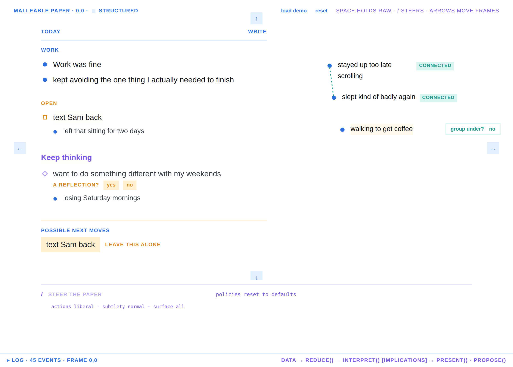
      <figcaption><b>Drag a phrase out of the column</b> and it is pinned where you drop it. Two pinned near each other are offered <i>connect these?</i>. One dropped indented under another is offered <i>group under?</i>. Nearness is evidence, never a conclusion.</figcaption>
    </figure>
    <div class="two">
      <figure>
        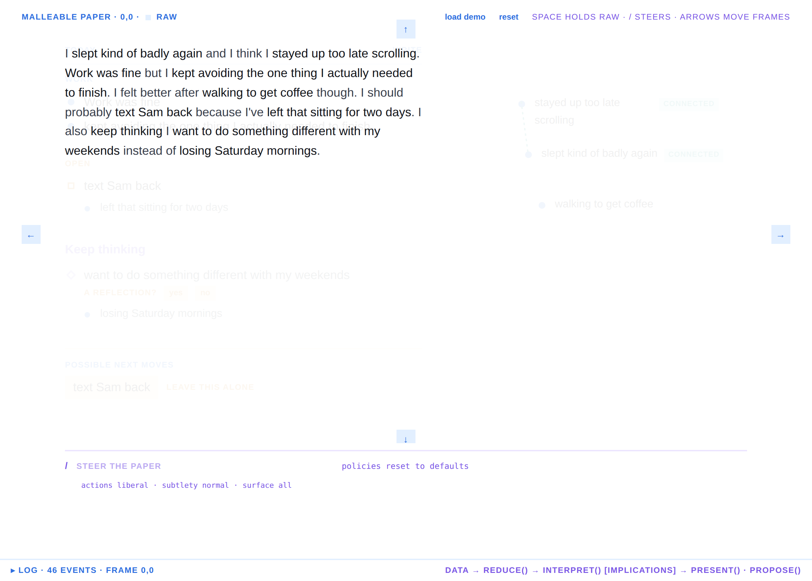
        <figcaption><b>Hold Space.</b> The paragraph shows through the structure. Nothing you wrote is ever more than a keypress away.</figcaption>
      </figure>
      <figure>
        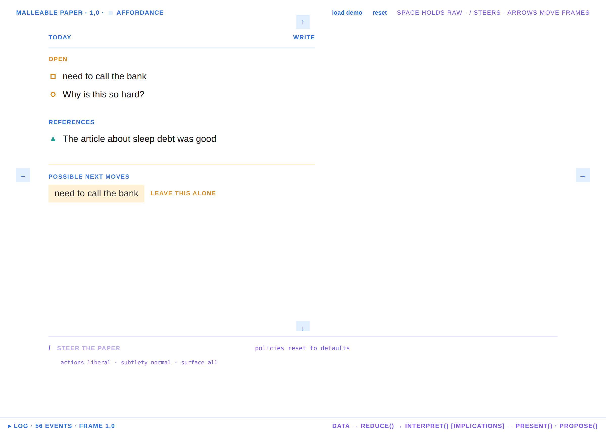
        <figcaption><b>Arrow right.</b> The adjacent frame on the plane, with its own text, tends and pins.</figcaption>
      </figure>
    </div>
    <div class="marks">
      <span><i class="mk mk-note"></i>note</span>
      <span><i class="mk mk-action"></i>action</span>
      <span><i class="mk mk-question"></i>question</span>
      <span><i class="mk mk-reflection"></i>reflection</span>
      <span><i class="mk mk-intention"></i>intention</span>
      <span><i class="mk mk-reference"></i>reference</span>
      <span class="quiet">· markers are geometry, green once you confirm</span>
    </div>
  </section>

  <section>
    <span class="eyebrow rose">The contract</span>
    <h2>Three classes of content, one rule each.</h2>
    <dl class="kv">
      <dt>Authored</dt><dd>Exact substrings of what you wrote. Regular weight, 18px, ink. Never paraphrased, never rewritten. Tests assert it for every phrase and every authored heading.</dd>
      <dt>Derived</dt><dd>Grouping, order, nesting, markers, colour, placement. The paper may change these freely.</dd>
      <dt>Generated</dt><dd>New words. Small, uppercase, coloured, and only ever a label, a verb, or a question. No summaries, no advice.</dd>
    </dl>
    <p>Two more rules hold the whole thing honest. <b>Animate provenance:</b> a piece of structure starts on the pixels of the words it came from. <b>The agent's intentions are visible and tendable:</b> policy is the tended set of what the paper is trying to do, and you can switch any of it off.</p>
  </section>

  <section>
    <span class="eyebrow">The model</span>
    <h2>Two loops in parallel, joined by two stores.</h2>
    <div class="loop">
      <div class="data">data</div><div class="inf">inference</div><div class="int">intention</div><div class="act">action</div>
    </div>
    <div class="loop-note">
      <div><b>A reader infers from data.</b> Its input is the event log; its output is the implication list.</div>
      <div><b>A doer acts on an intention.</b> Its input is the intention set; its output is an action, which lands in the log.</div>
    </div>
    <p>The human and the paper each run both. The paper's reader is the interpreter and the scanner. The paper's doer is the proposer. The human's reader is reading. The human's doer is typing, dragging, tending, steering. Each arrow is a question: <i>what does this mean? what is wanted? what can be done? what happened?</i></p>
    <div class="stack">
      <h3>The implication list</h3>
      <p>Data in, plausible implications out, as a running list. Every claim has a key (<span class="mono">subject|claim</span>), a confidence, a basis, and a state: proposed, confirmed, rejected, deferred, superseded. A human tend on a key outlives every re-emission. The interpreter's "this is an action" and the scanner's "these two are near" and the intent guess "this wants to be resolved" are all the same kind of thing on the same list. Every affordance on screen is the UI form of one implication, and clicking it is a tend.</p>
    </div>
    <div class="stack">
      <h3>Intent</h3>
      <p>Intent is a claim like any other, about a person, so it is shown as a question and never as a statement. A journal entry plausibly wants to record, vent, resolve, decide, or remember. A drag on a slider plausibly wants to correct or to explore. The paper acts on an intent only above a threshold or after a tend, and the same drag produces a different action under a different intent.</p>
    </div>
    <figure>
      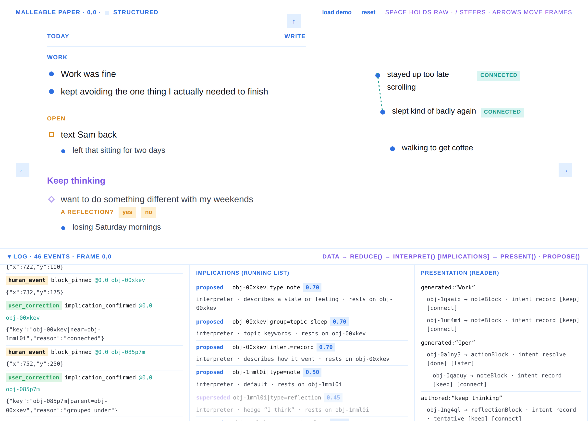
      <figcaption><b>The log drawer.</b> The three stores side by side: events (authoritative), the running list with states, and what the reader rendered. This is the debugging surface and the honesty surface at once.</figcaption>
    </figure>
  </section>

  <section>
    <span class="eyebrow amber">Where it goes</span>
    <h2>A web app that builds sub-apps on demand over one event-sourced model.</h2>
    <p>The soundboard of next moves is a widget the paper chose because its purpose matched an implication ("several open actions, no order"). A checklist, a table, an x-y plot of energy over the day, a timeline across frames are the same move with a different purpose. The paper does not start with those widgets. It starts with a catalogue of purposes and grows shapes when nothing fits.</p>
    <div class="scroll">
      <table>
        <tr><th>shape</th><th>purpose it serves</th><th>the implication that summons it</th></tr>
        <tr><td>soundboard</td><td>pick one of a few moves fast</td><td>several open actions with no order</td></tr>
        <tr><td>toggle pair</td><td>resolve one ambiguity</td><td>a tentative type</td></tr>
        <tr><td>checklist</td><td>finish a known set</td><td>one action with visible sub-steps</td></tr>
        <tr><td>x-y plot</td><td>track a value over time</td><td>the same measure named across frames</td></tr>
        <tr><td>table</td><td>compare many objects on shared relations</td><td>many objects of one kind</td></tr>
        <tr><td>scratch frame</td><td>think in space</td><td>a reflection with no resolution</td></tr>
      </table>
    </div>
    <div class="stack">
      <h3>Logs are schema</h3>
      <p>The event log is not one fixed table. A log is a schema the paper can generate when it needs a new kind of evidence: an energy log, a contact log, a "things I said I'd do" log. Event sources link to each other as queries. A widget with declared semantics is a producer of typed events into such a log, so its drags become claims.</p>
    </div>
    <div class="stack">
      <h3>Missing data is an intent</h3>
      <p>When the paper tries to infer something and lacks the data, the gap is not an error. It becomes an intermediate intention: create the channel or the log that would hold the missing information, or create the presentation that asks you for it. The x-y plot at the start of a session exists because an inference about your afternoons needed a number it did not have. The backend and the frontend are both malleable, and both are shaped by the same thing: the agent's intent, which you can see and tend.</p>
    </div>
  </section>

  <section>
    <span class="eyebrow green">What the prototype proves</span>
    <h2>The loop runs on an append-only log and three pure functions.</h2>
    <ul>
      <li>Reload replays everything. Corrections and policies persist. The drawer shows the chain.</li>
      <li>Animated provenance holds up with no animation library, and it does the explaining: nobody asks where a block came from.</li>
      <li>"Not a task" as a gesture that moves a block, changes its marker, removes its button and opens a heading made of your words feels like manipulating the interpretation, not editing metadata.</li>
      <li>Holding back one agent intention changes proposals and nothing else. The reader/doer split is real, not a diagram.</li>
      <li>Typographic and spatial placement coexist in one frame with no mode switch. Dragging out of the column is the whole gesture.</li>
    </ul>
    <span class="eyebrow rose">What it does not prove</span>
    <ul>
      <li>That the implications are good. The producers are regexes tuned to one paragraph. Intent is a guess per marker. A model plugs in at one seam, with the same contract: exact substrings, keys, confidence, basis, never rewritten text.</li>
      <li>That the list stays legible as it grows. There is no budget per frame yet.</li>
      <li>That editing and structure can coexist in place. Today you return to the paragraph to edit.</li>
      <li>That size, weight, case and colour alone tell your words from the paper's. The serif/sans split was a stronger signal; this is a bet on restraint.</li>
    </ul>
  </section>

  <section>
    <span class="eyebrow">Status</span>
    <h2>Runs locally today.</h2>
    <p>Bun, React, TypeScript, Wordgard as the editor. Eighteen tests over the reader, the doer, tending and policy. Four commits on <code>claude/paper-write-back-prototype-vihqj6</code>, waiting on repository access to push. <code>bun install && bun run dev</code>, then <i>load demo</i>.</p>
    <p class="quiet">Every screenshot on this page was captured from the running prototype by <code>docs/walk.ts</code>. Nothing is a mockup.</p>
  </section>
</main>
